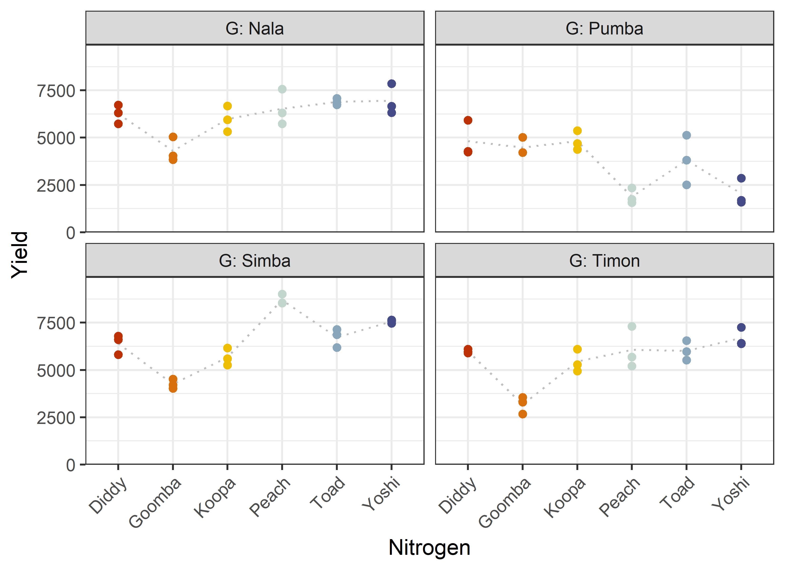
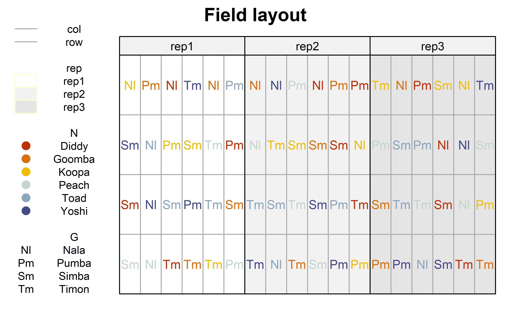
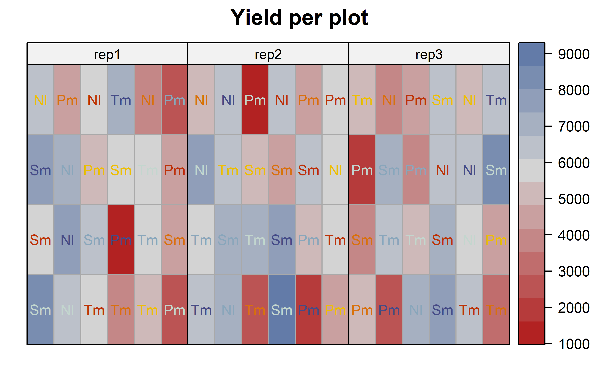
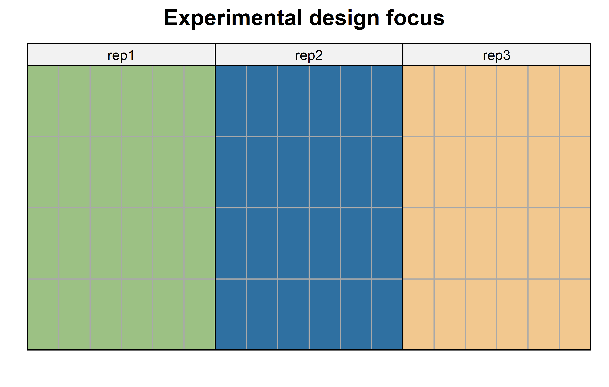
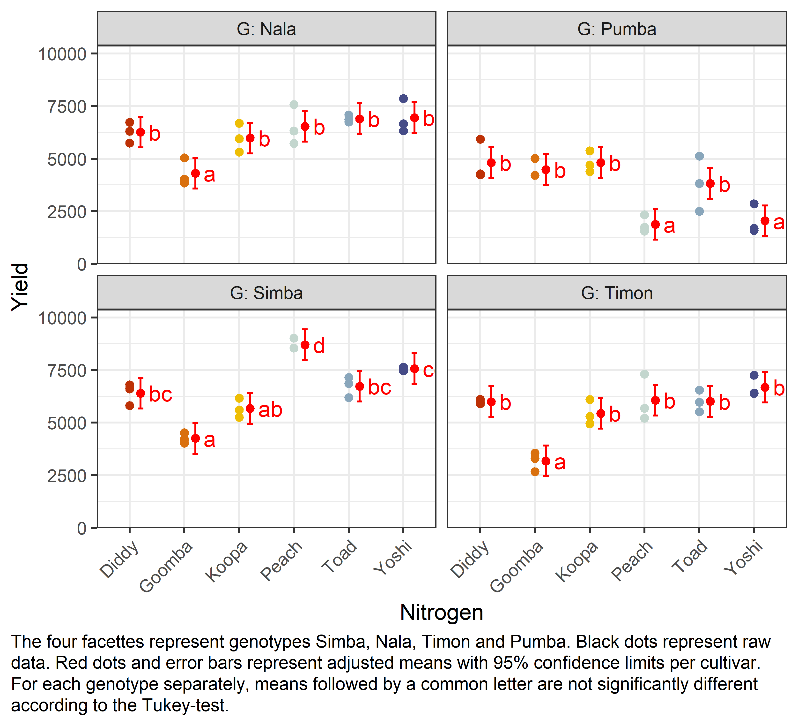

# (install &) load packages
pacman::p_load(
conflicted,
desplot,
emmeans,
ggtext,
MetBrewer,
multcomp,
multcompView,
tidyverse)
# handle function conflicts
conflict_prefer("filter", "dplyr")
conflict_prefer("select", "dplyr")Two-way randomized complete block design
Paul Schmidt ![]()
Content summary
Two-way ANOVA & pairwise comparison post hoc tests in a randomized complete block design.
Data
This data is a slightly modified version of a dataset originally published in Gomez and Gomez (1984) from a yield (kg/ha) trial with 4 genotypes (G) and 6 nitrogen levels (N), leading to 24 treatment level combinations. The data set here has 3 complete replicates (rep) and is laid out as a randomized complete block design (RCBD).
Import
# data is available online:
path <- "https://raw.githubusercontent.com/SchmidtPaul/dsfair_quarto/master/data/riceRCBD.csv"dat <- read_csv(path) # use path from above
dat# A tibble: 72 × 6
row col rep N G yield
<dbl> <dbl> <chr> <chr> <chr> <dbl>
1 2 6 rep1 Goomba Simba 4520
2 3 4 rep1 Koopa Simba 5598
3 2 3 rep1 Toad Simba 6192
4 1 1 rep1 Peach Simba 8542
5 2 1 rep1 Diddy Simba 5806
6 3 1 rep1 Yoshi Simba 7470
7 4 5 rep1 Goomba Nala 4034
8 4 1 rep1 Koopa Nala 6682
9 3 2 rep1 Toad Nala 6869
10 1 2 rep1 Peach Nala 6318
# ℹ 62 more rowsFormat
Before anything, the columns rep, N and G should be encoded as factors, since R by default encoded them as character.
Explore
We make use of dlookr::describe() to conveniently obtain descriptive summary tables. Here, we get can summarize per nitrogen level, per genotype and also per nitrogen-genotype-combination.
dat %>%
group_by(N) %>%
dlookr::describe(yield) %>%
select(2:sd) %>%
arrange(desc(mean))# A tibble: 6 × 5
N n na mean sd
<fct> <int> <int> <dbl> <dbl>
1 Diddy 12 0 5866. 832.
2 Toad 12 0 5864. 1434.
3 Yoshi 12 0 5812 2349.
4 Peach 12 0 5797. 2660.
5 Koopa 12 0 5478. 657.
6 Goomba 12 0 4054. 672.dat %>%
group_by(G) %>%
dlookr::describe(yield) %>%
select(2:sd) %>%
arrange(desc(mean))# A tibble: 4 × 5
G n na mean sd
<fct> <int> <int> <dbl> <dbl>
1 Simba 18 0 6554. 1475.
2 Nala 18 0 6156. 1078.
3 Timon 18 0 5563. 1269.
4 Pumba 18 0 3642. 1434.dat %>%
group_by(N, G) %>%
dlookr::describe(yield) %>%
select(2:sd) %>%
arrange(desc(mean)) %>%
print(n=Inf)# A tibble: 24 × 6
N G n na mean sd
<fct> <fct> <int> <int> <dbl> <dbl>
1 Peach Simba 3 0 8701. 270.
2 Yoshi Simba 3 0 7563. 86.9
3 Yoshi Nala 3 0 6951. 808.
4 Toad Nala 3 0 6895 166.
5 Toad Simba 3 0 6733. 490.
6 Yoshi Timon 3 0 6687. 496.
7 Peach Nala 3 0 6540. 936.
8 Diddy Simba 3 0 6400 523.
9 Diddy Nala 3 0 6259 499.
10 Peach Timon 3 0 6065. 1097.
11 Toad Timon 3 0 6014 515.
12 Diddy Timon 3 0 5994 101.
13 Koopa Nala 3 0 5982 684.
14 Koopa Simba 3 0 5672 458.
15 Koopa Timon 3 0 5443. 589.
16 Koopa Pumba 3 0 4816 506.
17 Diddy Pumba 3 0 4812 963.
18 Goomba Pumba 3 0 4481. 463.
19 Goomba Nala 3 0 4306 646.
20 Goomba Simba 3 0 4253. 248.
21 Toad Pumba 3 0 3816 1311.
22 Goomba Timon 3 0 3177. 453.
23 Yoshi Pumba 3 0 2047. 703.
24 Peach Pumba 3 0 1881. 407. Additionally, we can decide to plot our data. One way to deal with the combination of two factors would be to use panels/facets in ggplot2.
Note that we here define a custom set of colors for the Nitrogen levels that will be used throughout this chapter.
Click to show/hide code
ggplot(data = dat) +
aes(y = yield, x = N, color = N) +
facet_wrap(~G, labeller = label_both) +
stat_summary(
fun = mean,
colour = "grey",
geom = "line",
linetype = "dotted",
group = 1
) +
geom_point() +
scale_x_discrete(
name = "Nitrogen"
) +
scale_y_continuous(
name = "Yield",
limits = c(0, NA),
expand = expansion(mult = c(0, 0.1))
) +
scale_color_manual(
values = Ncolors,
guide = "none"
) +
theme_bw() +
theme(axis.text.x = element_text(
angle = 45,
hjust = 1,
vjust = 1
))
Finally, since this is an experiment that was laid with a certain experimental design (= a randomized complete block design; RCBD) - it makes sense to also get a field plan. This can be done via desplot() from {desplot}.
Click to show/hide code
desplot(
data = dat,
form = rep ~ col + row | rep, # fill color per rep, headers per rep
col.regions = c("white", "grey95", "grey90"),
text = G, # genotype names per plot
cex = 0.8, # genotype names: font size
shorten = "abb", # genotype names: abbreviate
col = N, # color of genotype names for each N-level
col.text = Ncolors, # use custom colors from above
out1 = col, out1.gpar = list(col = "darkgrey"), # lines between columns
out2 = row, out2.gpar = list(col = "darkgrey"), # lines between rows
main = "Field layout", # plot title
show.key = TRUE, # show legend
key.cex = 0.7 # legend font size
)
Click to show/hide code
desplot(
data = dat,
form = yield ~ col + row | rep, # fill color per rep, headers per rep
text = G, # genotype names per plot
cex = 0.8, # genotype names: font size
shorten = "abb", # genotype names: abbreviate
col = N, # color of genotype names for each N-level
col.text = Ncolors, # use custom colors from above
out1 = col, out1.gpar = list(col = "darkgrey"), # lines between columns
out2 = row, out2.gpar = list(col = "darkgrey"), # lines between rows
main = "Yield per plot", # plot title
show.key = FALSE, # show legend
key.cex = 0.7 # legend font size
)
Click to show/hide code
repcolors <- c(met.brewer("VanGogh3", 1),
met.brewer("Hokusai2", 1),
met.brewer("OKeeffe2", 1)) %>%
as.vector() %>%
set_names(levels(dat$rep))
desplot(
data = dat,
form = rep ~ col + row | rep, # fill color per rep, headers per rep
col.regions = repcolors,
out1 = col, out1.gpar = list(col = "darkgrey"), # lines between columns
out2 = row, out2.gpar = list(col = "darkgrey"), # lines between rows
main = "Experimental design focus", # plot title
show.key = FALSE # don't show legend
)
Model
Finally, we can decide to fit a linear model with yield as the response variable. In this example it makes sense to mentally group the effects in our model as either design effects or treatment effects. The treatments here are the genotypes G and the nitrogen levels N which we will include in the model as main effects, but also via their interaction effect N:G. Regarding the design, the model needs to contain a block (rep) effect.
mod <- lm(
yield ~ N + G + N:G + rep,
data = dat
)
Model assumptions met? (click to show)
It would be at this moment (i.e. after fitting the model and before running the ANOVA), that you should check whether the model assumptions are met. Find out more in the summary article “Model Diagnostics”
ANOVA
Based on our model, we can then conduct an ANOVA:
ANOVA <- anova(mod)
ANOVAAnalysis of Variance Table
Response: yield
Df Sum Sq Mean Sq F value Pr(>F)
N 5 30480453 6096091 15.4677 6.509e-09 ***
G 3 89885035 29961678 76.0221 < 2.2e-16 ***
rep 2 1084820 542410 1.3763 0.2627
N:G 15 69378044 4625203 11.7356 4.472e-11 ***
Residuals 46 18129432 394118
---
Signif. codes: 0 '***' 0.001 '**' 0.01 '*' 0.05 '.' 0.1 ' ' 1Accordingly, the ANOVA’s F-test found the nitrogen-genotype-interaction to be statistically different (p < .001***).
Mean comparison
Besides an ANOVA, one may also want to compare adjusted yield means between cultivars via post hoc tests (t-test, Tukey test etc.). Especially because of the results of this ANOVA, we should compare means for all N:G interactions and not for the N and/or G main effects. When doing so, we still have multiple options to choose from. I here decide to compare all genotype means per nitrogen
mean_comp <- mod %>%
emmeans(specs = ~ N|G) %>% # adj. mean per cultivar
cld(Letters = letters) # compact letter display (CLD)
mean_compG = Nala:
N emmean SE df lower.CL upper.CL .group
Goomba 4306 362 46 3576 5036 a
Koopa 5982 362 46 5252 6712 b
Diddy 6259 362 46 5529 6989 b
Peach 6540 362 46 5811 7270 b
Toad 6895 362 46 6165 7625 b
Yoshi 6951 362 46 6221 7680 b
G = Pumba:
N emmean SE df lower.CL upper.CL .group
Peach 1881 362 46 1151 2610 a
Yoshi 2047 362 46 1317 2776 a
Toad 3816 362 46 3086 4546 b
Goomba 4481 362 46 3752 5211 b
Diddy 4812 362 46 4082 5542 b
Koopa 4816 362 46 4086 5546 b
G = Simba:
N emmean SE df lower.CL upper.CL .group
Goomba 4253 362 46 3523 4982 a
Koopa 5672 362 46 4942 6402 ab
Diddy 6400 362 46 5670 7130 bc
Toad 6733 362 46 6003 7462 bc
Yoshi 7563 362 46 6834 8293 cd
Peach 8701 362 46 7971 9430 d
G = Timon:
N emmean SE df lower.CL upper.CL .group
Goomba 3177 362 46 2448 3907 a
Koopa 5443 362 46 4713 6172 b
Diddy 5994 362 46 5264 6724 b
Toad 6014 362 46 5284 6744 b
Peach 6065 362 46 5336 6795 b
Yoshi 6687 362 46 5958 7417 b
Results are averaged over the levels of: rep
Confidence level used: 0.95
P value adjustment: tukey method for comparing a family of 6 estimates
significance level used: alpha = 0.05
NOTE: If two or more means share the same grouping symbol,
then we cannot show them to be different.
But we also did not show them to be the same. Note that if you would like to see the underlying individual contrasts/differences between adjusted means, simply add details = TRUE to the cld() statement. Furthermore, check out the Summary Article “Compact Letter Display”.
Finally, we can create a plot that displays both the raw data and the results, i.e. the comparisons of the adjusted means that are based on the linear model.
Click to show/hide code
my_caption <- "The four facettes represent genotypes Simba, Nala, Timon and Pumba. Black dots represent raw data. Red dots and error bars represent adjusted means with 95% confidence limits per cultivar. For each genotype separately, means followed by a common letter are not significantly different according to the Tukey-test."
ggplot() +
facet_wrap(~G, labeller = label_both) + # facette per G level
aes(x = N) +
# black dots representing the raw data
geom_point(
data = dat,
aes(y = yield, color = N)
) +
# red dots representing the adjusted means
geom_point(
data = mean_comp,
aes(y = emmean),
color = "red",
position = position_nudge(x = 0.2)
) +
# red error bars representing the confidence limits of the adjusted means
geom_errorbar(
data = mean_comp,
aes(ymin = lower.CL, ymax = upper.CL),
color = "red",
width = 0.1,
position = position_nudge(x = 0.2)
) +
# red letters
geom_text(
data = mean_comp,
aes(y = emmean, label = str_trim(.group)),
color = "red",
position = position_nudge(x = 0.35),
hjust = 0
) +
scale_x_discrete(
name = "Nitrogen"
) +
scale_y_continuous(
name = "Yield",
limits = c(0, NA),
expand = expansion(mult = c(0, 0.1))
) +
scale_color_manual(
values = Ncolors,
guide = "none"
) +
theme_bw() +
labs(caption = my_caption) +
theme(
plot.caption = element_textbox_simple(margin = margin(t = 5)),
plot.caption.position = "plot",
axis.text.x = element_text(
angle = 45,
hjust = 1,
vjust = 1
)
)
References
Gomez, Kwanchai A, and Arturo A Gomez. 1984. Statistical Procedures for Agricultural Research. 2nd ed. An International Rice Research Institute Book. Nashville, TN: John Wiley & Sons.